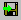
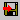

DebugView lets you both save and print captured debug output.
You can save the contents of the DebugView output window as a text file (.log extension) using the File|Save or File|Save As menu items, or the Ctrl+S hot-key sequence.
Using Edit|Copy or the Ctrl+C hot-key sequence you can copy the debug output contained within selected output lines to the clipboard.
To have DebugView log output to a file as it displays it, use the File|Log to File or File |Log to File As menu items, the toolbar button, or the Ctrl+O hot-key sequence. Log file settings you specify include the name of the log file, the maximum size it should be allowed to grow, and whether or not DebugView should restart the log or append to it if the file specified already contains output. If you select the wrap option then DebugView will wrap around to the beginning of the file when the file's maximum specified size is reached.
If you select the Create New Log Every Day option then DebugView will not limit the size of the log file, but will create a new log file every day that has the current date appended to the base log file name you enter.
When logging is active the log file toolbar button will look like

. To stop logging simply select the toolbar button or the File |Log to File menu item. If the log file’s maximum size is reached logging to the file stops and the logging toolbar button changes to
.If you are monitoring debug output from multiple remote computers and enable logging to a file, all output is logged to the file you specify. Ranges of output from different computers are separated with a header that indicates the name of the computer from which the subsequent records were recorded.
You can use File|Print or File|Print Range to print the contents of the display to a printer. Choose Print Range if you only want to print a subset of the sequence numbers displayed, or Print if you want to print all the output records. The Ctrl+P hot-key sequence corresponds to File|Print.
Using the Print Range dialog you can also specify whether or not sequence numbers and timestamps will be printed along with the debug output. Omitting these fields can save page space if they are not necessary. The settings you choose are used in all subsequent print operations.
In order to prevent wrap-around when output lines are wider than a page, consider using landscape mode instead of portrait when printing.
Use the File|Open menu item to load a previously saved DebugView log file into the output window.